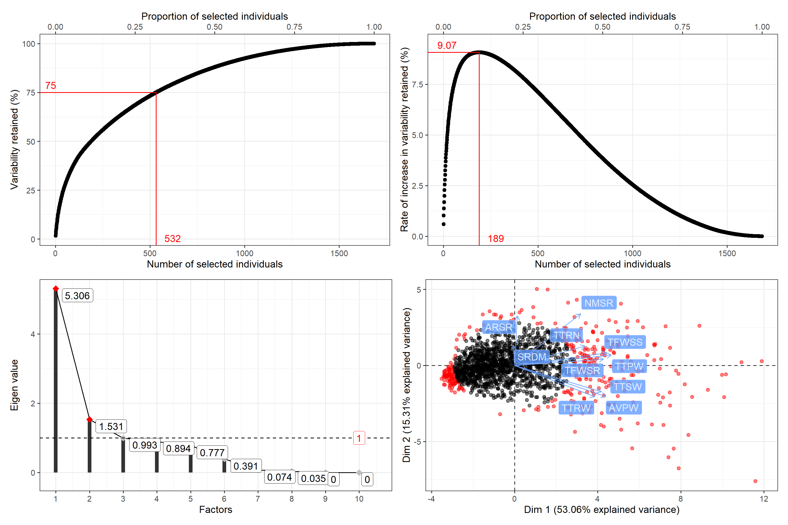

rpcss: Constitution of Core Collections by Principal Component Scoring Strategy 
Version : 0.0.0.9000; License: GPL-2|GPL-3


Description
Generate a Core Collection with Principal Component ScoringStrategy (PCSS) using qualitative and/or quantitative trait data accordingto Hamon and Noirot 1990<https://www.documentation.ird.fr/hor/fdi:36506>,Noirot et al. 1996 <doi:10.2307/2527837> and Noirot et al. 2003<https://www.documentation.ird.fr/hor/fdi:010031886>.

Installation
The development version can be installed from github as follows:
# Install development version from Github
devtools::install_github("aravind-j/rpcss")Citing rpcss
To cite the methods in the package use:
citation("rpcss")To cite the R package 'rpcss' in publications use:
Aravind, J. (2024). rpcss: Constitution of Core Collections by
Principal Component Scoring Strategy. R package version 0.0.0.9000,
https://aravind-j.github.io/rpcss/.
A BibTeX entry for LaTeX users is
@Manual{,
title = {rpcss: Constitution of Core Collections by Principal Component Scoring Strategy},
author = {J. Aravind},
year = {2024},
note = {R package version 0.0.0.9000 https://aravind-j.github.io/rpcss/},
}
This free and open-source software implements academic research by the
authors and co-workers. If you use it, please support the project by
citing the package.